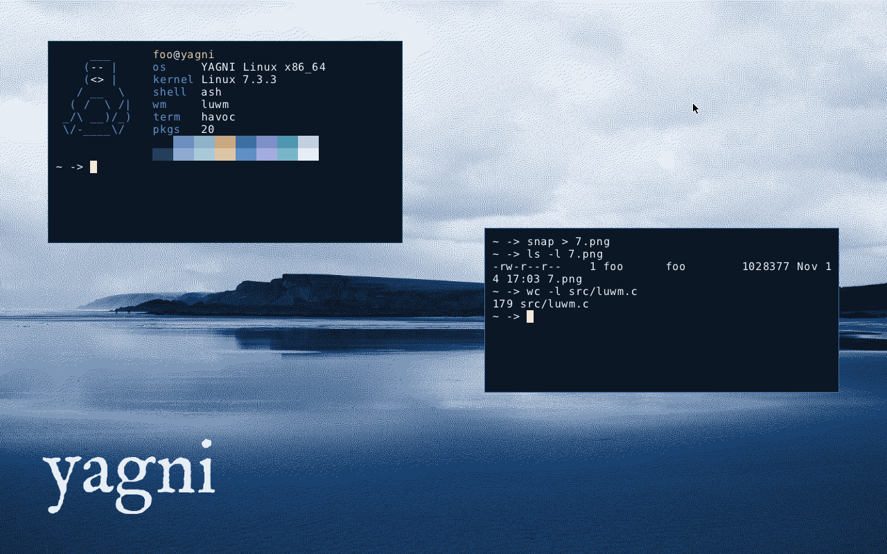

-> luwm
“Very little is needed to make a happy life.”
about
low usage window manager. a wayland compositor in 179 lines of c on swc. under 30MB of ram with a terminal open.

features
- floating windows, mouse to move and resize
- 4 workspaces
- focus follows the mouse
- fullscreen
keys
super + return -> terminal
super + d -> launcher
super + q -> close the window
super + shift + q -> quit luwm
super + tab -> raise the bottom window
super + ` -> lower the top window
super + f -> fullscreen
super + 1-4 -> switch workspace
super + shift + 1-4 -> send the window to a workspace
super + left drag -> move
super + right drag -> resize
super + middle click -> lower the window
super + p -> screenshot, by deadeye
install
on yagni:
-> jits a luwm
-> startw
elsewhere, swc with patches/:
-> make SWC=/path/to/swc
configuration
colours and keybinds: desktop. built-in keys: keys[] in luwm.c.
|